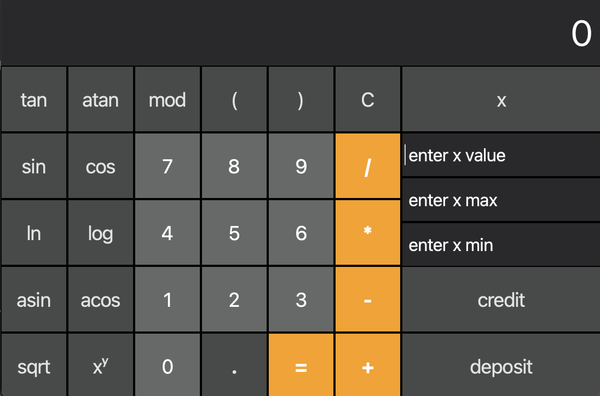
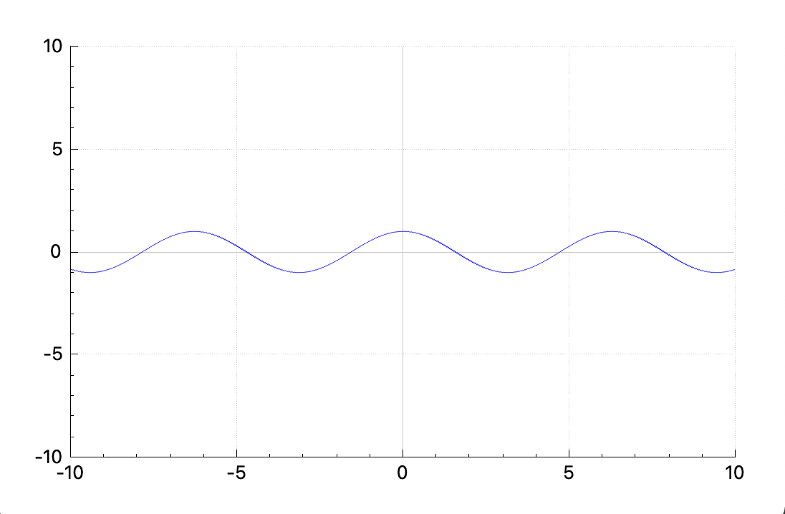
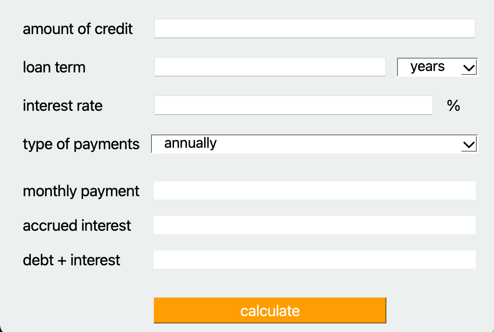
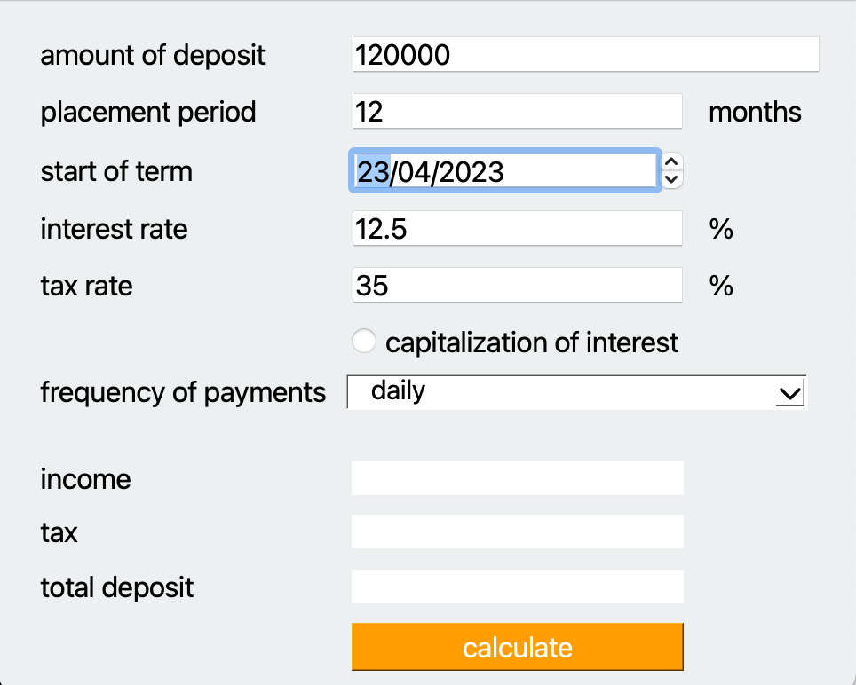

This project implements an extended version of the standard calculator in C++ in the object-oriented programming paradigm. In addition to basic arithmetic operations, such as plus-minus and multiply-divide, the calculator is supplemented with the ability to calculate arithmetic expressions with priority, as well as some mathematical functions (sine, cosine, logarithm, etc.). In addition to calculating expressions, the calculator also supports using the x variable and building the graph of the corresponding function. As an additional improvement, a credit calculator has been implemented.
The program is built using Makefile with a standard set of goals for GNU programs: all, install, uninstall, clean, dvi, dist, test, gcov_report.
Implementation with GUI, based on the Qt GUI library
Construct a graph of a function defined by an expression in infix notation with variable x (with coordinate axes, notation of the scale used, and a grid with adaptive step), The definition area and value area of the functions are limited to at least the numbers -1000000 to 1000000



Outcome: income, tax, total deposit at the end of the period
